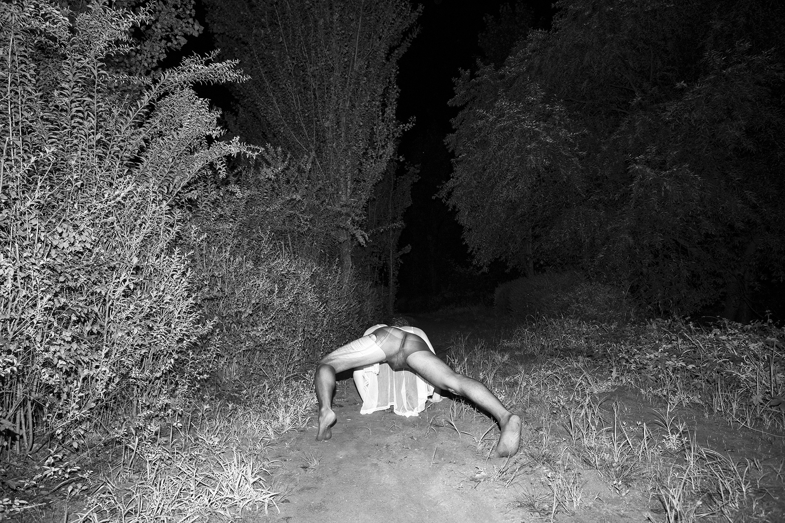
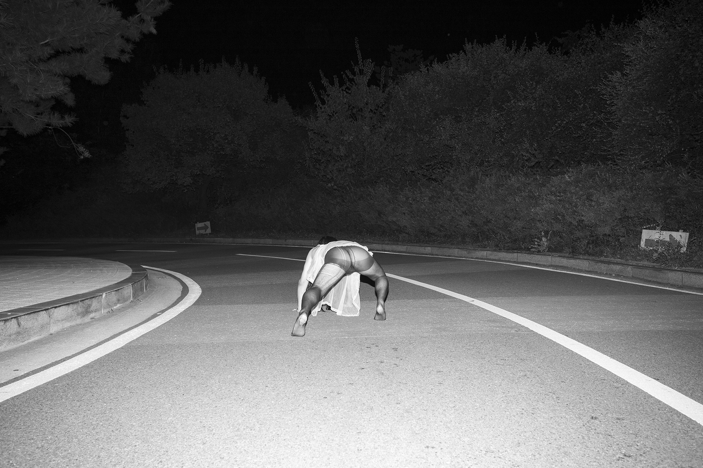
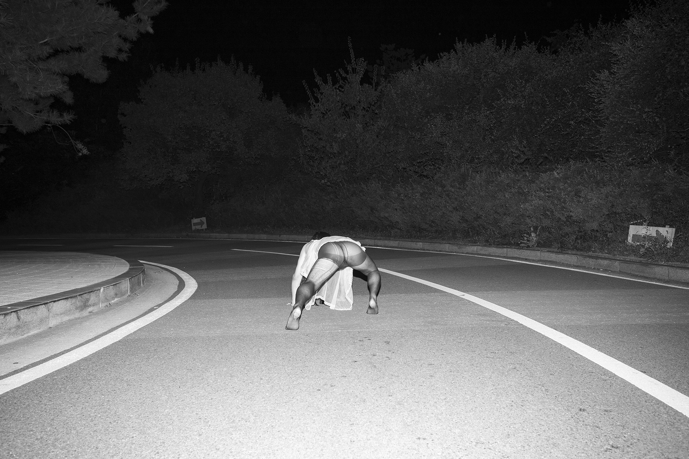

<끝없이 걷는 날>과 <무제> 그리고 사진
<
안초롱: 그리고 저 이것도 물어보고 싶었어요. 어쨌든 이 작업들은 퍼포먼스적인 성향이 굉장히 강하다고 느껴지는데 왜 사진의 형식으로 보여주는지? <끝없이 걷는 날>은 영상으로도 찍을 수 있고, 그 외에도 다양한 방법이 있잖아요.
재훈: 제 성격 때문이 아닐까요? 어제 다른 리뷰 자리에서 셀프 포트레이트를 고수하는 이유를 질문받았는데, 제가 ‘다른 사람을 못 믿어서’라고 답했거든요. 초롱 씨의 질문에 퍼포먼스를 예시로 답해보자면, 셀프 포트레이트의 이유와 마찬가지로 저에게는 관객이란 존재에 관한 신뢰가 아직 없어요. <끝없이 걷는 날>과 같은 세팅으로 사진을 찍는 일은 저에게 편하고 익숙한 일인데, 아예 낯선 사람 앞에 서는 일은 잘 못 하겠더라고요. 관객이 한 명 있는 퍼포먼스 정도가 생각해 볼만한 범위 같아요.
안초롱: 그 답변도 나름대로 흥미롭네요. 근데 제가 재훈 씨의 사진과 퍼포먼스의 관계에 관해 말하고 싶은 점은 포인트가 조금 달라요. 저는 재훈 씨가 사진 매체를 사용하는 방식이 퍼포먼스 작가들이 사진을 사용하는 방식이랑 비슷하다고 생각했거든요. 퍼포먼스 작가들은 ‘내가 여기서 어떤 행동을 했다’라는 사실을 기록하기 위해 사진을 사용하잖아요.
재훈: 네, 그렇죠.
안초롱: 재훈 씨 역시 - 사진가로서 사진 매체를 사용한다기보다는 - 자신의 예술 활동에 대한 증거를 남기기 위한 방식으로써 사진을 사용하는 것으로 보여요. 퍼포먼스 작가나 개념 미술가가 사진 매체를 대하는 것처럼요.
재훈: 맞아요. 저도 그 방법론을 공유하는 작품들을 처음 봤을 때부터 간직하고 있어요. <끝없이 걷는 날>은 분명히 그 연장선에 있는 작품이고요.

 



안초롱: 그래서 재훈 씨가 사진가로 불리기를 원하지 않을 수도 있겠다는 생각도 들었어요. 오히려 미술가에 가깝지 않을까? 수염같이 다른 재료로도 자기의 이미지를 만들기도 하고, 셀프 포트레이트는 사실 모든 미술가가 한 번씩 해보는 주제이기도 하잖아요. 그래서 ‘이 작가는 사진 매체를 향한 관심이 그렇게 많아 보이지 않는구나’라는 생각도 했어요.
재훈: 말씀해 주신 이유처럼, 저는 예전에 사진을 잘 찍을 필요가 없다고 생각하기도 했어요.
안초롱: 그렇죠.
재훈: 근데 <오래된 방은 궁전>이나 <무제>, <대기 시간> 같은 작품은 - 프레임 안의 긴장을 충실히 다루는 방식이 사진가의 접근이라고 했을 때 - 사진가의 작품이기도 하다고 생각해요. 그 프레임으로 봐도 상관없다고 여기고요.

그래서 종합해 말해보면, 섞여 있어요. 둘 다 쓰는 것 같아요.
안초롱: 그럼 사진을 또 잘 찍고 싶기도 하신가 봐요.
재훈: 그런 마음이 있죠. 소실점 같은 거 좋아하고요. (웃음)
침대에 있던 <끝없이 걷는 날>은 보면서 어떠셨어요?
안초롱: 저에게는 이 T5 조명이 감상하는 데 방해가 됐어요. 너무 무대처럼 보여서 부자연스럽게 느껴졌고요. 사진 이미지는 바닥 몰딩에 있던 <끝없이 걷는 날>의 연장선에 있다고 보았는데 크롭을 하지 않아 풍경의 비율이 높더라고요. 그래서 다른 방식으로 두 번 말하는 느낌이 들기도 했어요. 이 작품도 재훈 씨 성격상 바닥 몰딩에 돌린 것처럼 반복하는 패턴이 있었는데, 제가 그 의도를 찾지는 못했어요.
재훈: 음... 제 의도보다는, 몸 부위만 크롭된 <끝없이 걷는 날>과 풍경을 보여주는 <끝없이 걷는 날>을 볼 때 어떻게 다르게 느껴지는지가 궁금했어요.
안초롱: 아무래도 야외라는 점이 더 강하게 느껴지죠. ‘이 사람이 이런 광활한 야외에서 혼자 뭐 하고 있나?’하는 느낌이 더 강하긴 해요. 다른 분들은 뭐라고 했나요?
재훈: ‘모델하우스 축소판 같다’ 그리고 ‘사진이 좀 더 잘 보였으면 좋겠다’. 이 정도? 방 안의 방처럼 느끼게 했다는 점은 성공한 것 같은데 ‘더 내실 있게 만들 수는 없었을까’하는 고민이 들긴 해요. 아무래도 더 만들어봐야 알겠죠.
안초롱: 또 궁금했던 점. 이 사진들은 전체 볼륨이 어느 정도예요? 그중에서 몇 컷 정도가 셀렉된 거죠? 예를 들어 100컷 찍었는데 그중에 한 30컷 됐다. 이런 식으로.
재훈: 전시에 내놓은 사진처럼 쓸 수 있는 게 반의반 정도는 더 있을 거예요.
안초롱: 신중하게 고르시는구나? 기록으로써 갖는 의미가 중요한 사진이고, 잘 찍지 않아도 괜찮다면 더 셀렉해도 되는 거 아니에요?
재훈: 크롭해서 바닥 몰딩에 붙인 사진들은 정말 그랬죠. 근데 아무래도 잘 찍은 걸 보여줘야 보러온 사람 입장에서도 즐거우니까요.
안초롱: 그렇긴 하죠. (웃음)
그 소녀
안초롱, 재훈
2024.07.31
크레딧
2025
추수 감사절 이후 박모의 단식
박이소
1984
<수염 드로잉>과 <오래된 방은 궁전>
안초롱, 재훈
2024.07.31